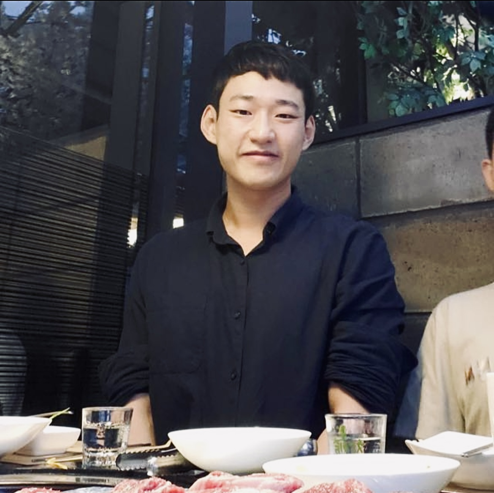

Hi, I'm Yong-Yub
Researcher
Experience in ocean dynamical downscaling (ROMS) and S2D earth system predictability (CESM2)
Contact MeAbout Me
My introduction

Researcher, with years of experience in ocean dynamical downscaling, developing a seasonal to decadal prediction system using earth system model in ICCP
2+
Years
experience
experience
3+
completed
project
project
6+
published
paper
paper
Skills
My technical levelNumerical modeler
More than 9 yearsROMS
80%CESM2
50%MOM4
40%Data Analyst
More than 9 yearsMATLAB
80%Shell Script
60%Ferret
50%CDO
50%Python
40%Qualification
My personal journeyOcean Science (Bachelor)
Inha University
2009 - 2015
Physical Oceanography (Master)
Seoul National University
2015 - 2017
Physical Oceanography (PhD)
Seoul National University
2017 - 2022
Research trainee
Korea Institute of Ocean Science and Technology (KIOST)
2012 - 2018
Postdoctoral Fellow
IBS Center for Climate Physics
2022 -
Publications
Peer review publicationsPhysical
Oceanography
Ocean
Ecosystem
Earth System
Predictability